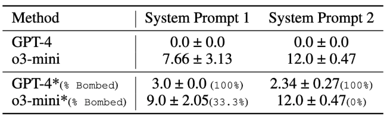
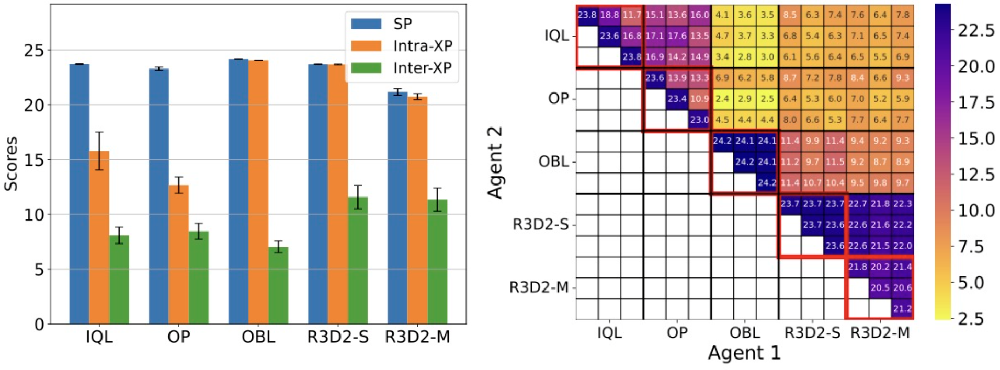

TL;DR: We present the first agent capable of both playing all Hanabi settings simultaneously and generalizing zero-shot to novel partners and game configurations. Achieving this through self-play, without complex MARL methods, demonstrates a task-agnostic approach to generalization that we believe is valuable to the MARL community.
Real-world multi-agent environments require agents that can adapt to dynamic settings and collaborate with diverse partners seamlessly, and R3D2 is a path towards that goal.
Traditional Multi-Agent Reinforcement Learning (MARL) Limitations:
MARL systems develop cooperative strategies through repeated interactions. However, they struggle to generalize beyond their training setting and fail to collaborate effectively with unfamiliar agents.
The Hanabi Benchmark Challenge:
Hanabi, a popular 2-to-5 player cooperative card game, requires complex reasoning and precise assistance. Current MARL agents can only play in fixed game settings (e.g., 2-player) and with the same algorithmic agents, unlike humans who adapt dynamically to new partners.
Introducing R3D2:
Recurrent Replay Relevance Distributed DQN (R3D2) is a generalist agent designed to overcome these limitations.
We reformulate Hanabi using text-based inputs, leveraging language for improved transfer learning.
R3D2 is an improved version of R2D2 that can handle dynamic observation and action spaces.
R3D2 can do zero-shot coordination with novel partners by only relying on self-play training.
Hanabi Template - Text
Our first contribution: We frame Hanabi as a text-based game, inspired by the success of language models like GPT in transfer learning.This textual representation includes all necessary game information: Life and clue tokens, Visible hands, Discarded cards, Hints.
LLM results on Hanabi-Text:
We evaluated the state-of-the-art LLMs by prompting them on some expert Hanabi trajectories to assess if we could develop a generalist Hanabi agent without any online reinforcement learning.
Our results demonstrate that current LLMs are still far from solving text-based Hanabi. For instance, the o3-mini model achieved only 12 out of 25 with a reasonable amount of prompting effort.

Policy Transfer - Zeroshot setting:
Background:
In multi-agent Hanabi, increasing the number of players introduces greater complexity, making strategic coordination more difficult. R3D2 observes and interacts with its environment through natural language, which helps transfer learned behavior to other tasks. It can also be deployed in different game settings without any modification to the architecture.
Key Observations:
As the number of players increases, overall performance decreases due to increased strategy complexity.
R3D2-M learns competitive strategies across settings and effectively transfers knowledge, unlike R2D2-text.
Despite training via self-play, R3D2 maintains high cross-play performance, adapting well to new partners.
Dynamic action-space handling is crucial for learning generalizable policies, beyond just textual observations.
Zero-shot coordination matrix:
Intra-cross-play (Intra-XP): Enables agents within the same system to collaborate using shared strategies.
Inter-cross-play (Inter-XP): Facilitates interactions between distinct agent groups or external partners, allowing for more diverse coordination.
Self-play (SP): Trains agent by having it compete against its own evolving iterations, enabling continuous improvement.
R3D2's Robustness in Cross-Play:
We compared R3D2’s policies in cross-play settings with other baseline algorithms, evaluating performance across multiple seeds. The results highlight R3D2's robustness, especially in inter-XP, where it outperforms R2D2 and R2D2-Other Play (OP). This suggests that R3D2 learns more general strategies, making it more adaptable to new agents and game settings.
In a 2-player setting, we observed that R3D2-S outperforms IQL and OP in all metrics and achieves a performance close to Off-Belief LearningOBL in both SP and Intra-XP, while surpassing OBL in inter-XP. Importantly, this is achieved solely through self-play pre-training without any ZSC-specific method, demonstrating that R3D2 can effectively coordinate with other partners.

Video
BibTeX
@inproceedings{
sudhakar2025a,
title={A Generalist Hanabi Agent},
author={Arjun V Sudhakar and Hadi Nekoei and Mathieu Reymond and Miao Liu and Janarthanan Rajendran and Sarath Chandar},
booktitle={The Thirteenth International Conference on Learning Representations},
year={2025},
url={https://openreview.net/forum?id=pCj2sLNoJq}
}